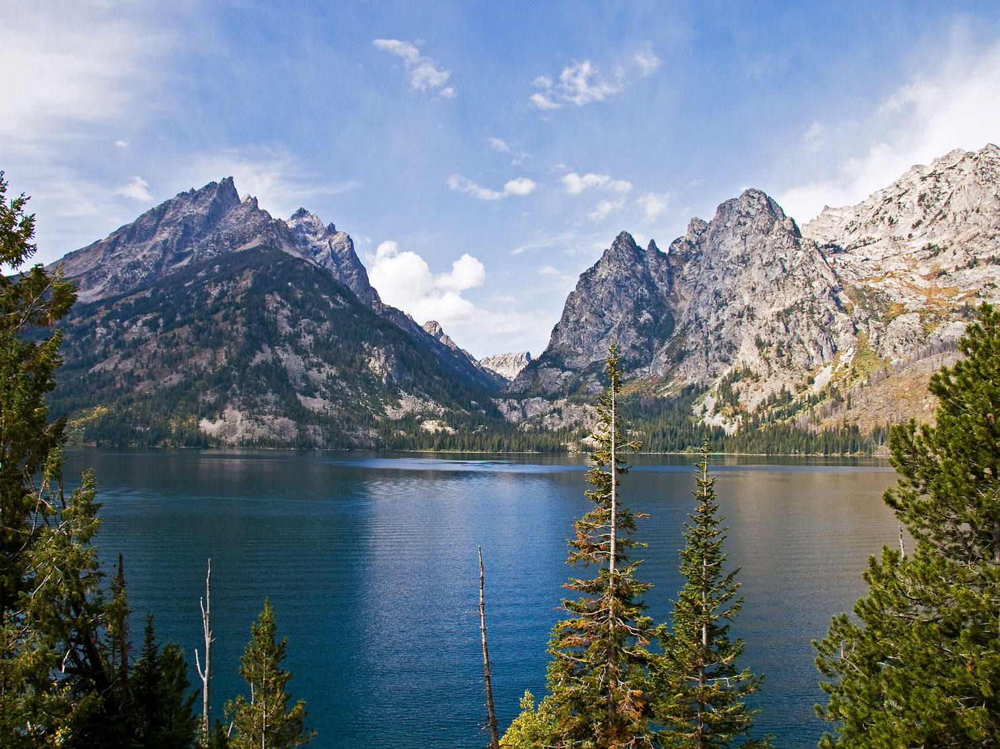
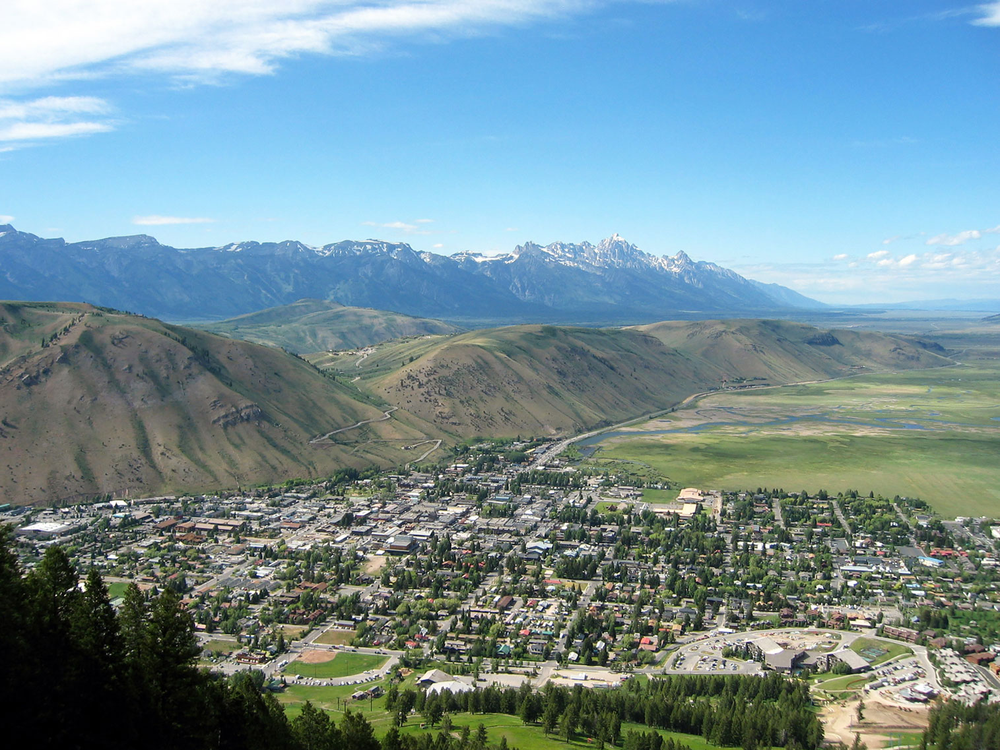
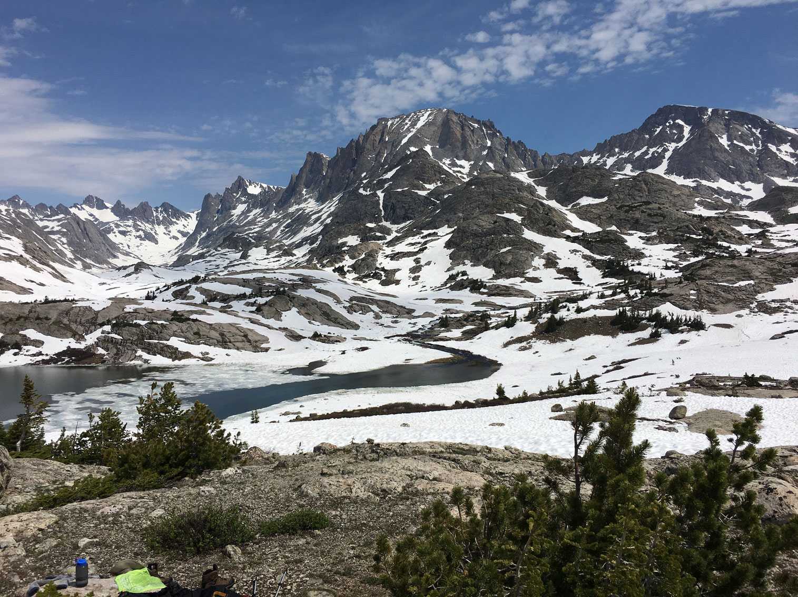
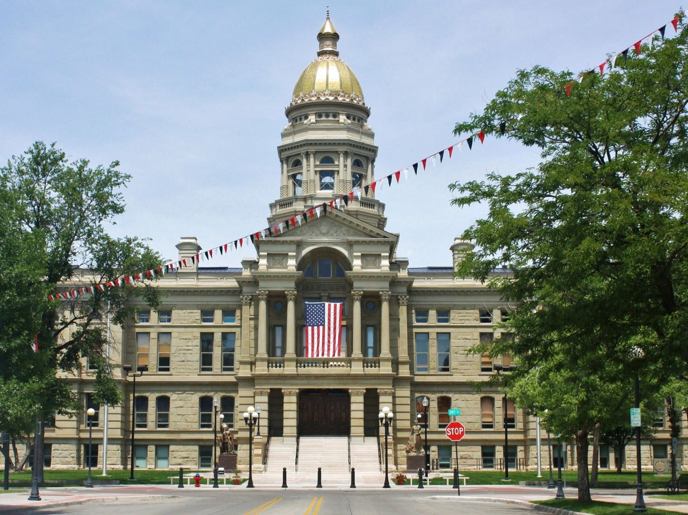
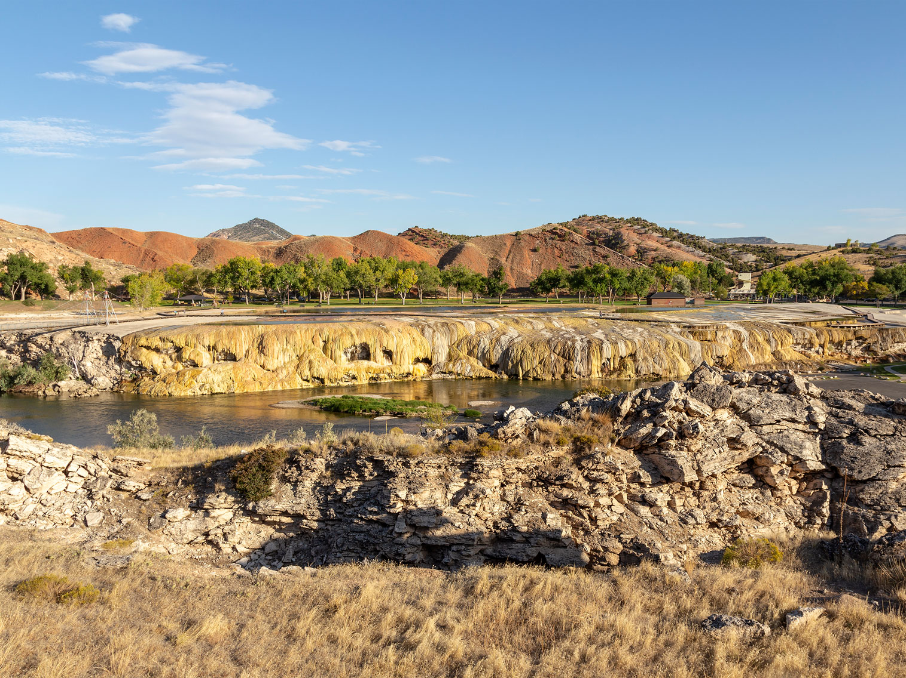

Wyoming Travel Guide
Explore Yellowstone's geysers and Grand Teton's peaks, then roam Wyoming's vast, wide-open prairies and badlands under big open skies.
Top Locations

Wyoming Map
Places to See in Wyoming
Old Faithful Geyser
Dietmar Rabich (XRay), CC BY-SA 4.0, via Wikimedia Commons; Image Size Adjusted
,_Old_Faithful_Geyser_--_2022_--_2592.jpg){kind=link}
Yellowstone National Park
The first national park in the U.S. and is also widely held to be the first national park in the world, the park is known for its wildlife and its many geothermal features, especially Old Faithful geyser

Jenny Lake
Acroterion, CC BY-SA 4.0, via Wikimedia Commons; Image Size Adjusted

Grand Teton National Park
National park 10 miles (16 km) south of Yellowstone, includes the major peaks of the 40-mile-long (64 km) Teton Range as well as most of the northern sections of the valley known as Jackson Hole

Mlewis2005, Public domain, via Wikimedia Commons; Image Size Adjusted

Jackson
Town in the Jackson Hole valley is a popular tourist destination due to its proximity to the ski resorts as well as Grand Teton and Yellowstone National Park

Fredlyfish4, CC BY-SA 4.0, via Wikimedia Commons; Image Size Adjusted

Wind River Range
Mountain range of the Rocky Mountains and the vast wilderness areas in western Wyoming is a popular recreation destination attracting hikers, climbers and skiers

Wyoming State Capitol
Postdlf, CC BY-SA 3.0, via Wikimedia Commons; Image Size Adjusted

Cheyenne
Historic Western city known for its railroad roots, cowboy culture, and annual rodeo celebrations that highlight frontier heritage.
Devils Tower National Monument
Colin Faulkingham, Public domain, via Wikimedia Commons; Image Size Adjusted

National Protected Areas

Hot Springs State Park
Acroterion, CC BY-SA 4.0, via Wikimedia Commons; Image Size Adjusted

Landmarks and Landscapes
Overview
Wyoming, the "Equality State," is the least populous state, with about 585,000 people, and the tenth largest by area. Cheyenne is the capital and largest city. The state is a landscape of high plains, sagebrush basins, and mountain ranges, with long drives, small towns, and more pronghorn and elk than people in many counties. It earned its nickname by granting women the right to vote in 1869, decades before the rest of the nation.
Most visitors come for the two national parks, Yellowstone and Grand Teton, with geysers such as Old Faithful, abundant wildlife, and the jagged Teton Range above Jackson. Others come for Wild West heritage, including the Buffalo Bill Center of the West in Cody and Cheyenne Frontier Days rodeo each July, for climbing and backpacking in the Wind River Range, and for the trails of the Oregon Trail pioneers.
Geography
Wyoming straddles the Rocky Mountains and the Great Plains. The western and central parts of the state are mountainous, with the Teton, Absaroka, Wind River, and Bighorn Ranges, while the east is high, rolling plains. It has the second highest average elevation of any state, and the Continental Divide splits around the Great Divide Basin, where water drains in neither direction. Gannett Peak, at 13,804 feet (4,207 m), is the state's highest point. The Snake, Green, and Yellowstone Rivers rise here, and Yellowstone sits atop one of the world's largest volcanic systems, which fuels its geysers and hot springs.
History
The Crow, Shoshone, Arapaho, Cheyenne, and Lakota hunted across the region long before John Colter, a member of the Lewis and Clark expedition, explored the Yellowstone area in 1807 and 1808. Mountain men held fur-trade rendezvous in the 1820s and 1830s, and from the 1840s hundreds of thousands of emigrants crossed Wyoming on the Oregon, California, and Mormon Trails, passing landmarks such as Independence Rock, South Pass, and Fort Laramie. The Union Pacific Railroad reached Cheyenne in 1867, Wyoming Territory was created in 1868, and Wyoming became the 44th state on July 10, 1890. Ranching, mining, and energy have long driven the economy, alongside tourism.
Yellowstone National Park
Yellowstone National Park, established in 1872, is the world's first national park and covers about 2.2 million acres, mostly in northwestern Wyoming with small parts in Montana and Idaho. It sits on top of a huge volcanic hot spot, and its more than 10,000 hydrothermal features, including about half of the world's geysers, make it one of the most geologically active places on Earth. Old Faithful erupts about every 90 minutes, Grand Prismatic Spring is the largest hot spring in the United States, and Norris Geyser Basin is the hottest and most changeable thermal area. The Grand Canyon of the Yellowstone has two waterfalls, including the 308-foot Lower Falls, Mammoth Hot Springs has travertine terraces, and Yellowstone Lake is the largest high-elevation lake in North America. Wildlife is the other major draw: bison, elk, grizzly bears, black bears, and wolves are most visible in Hayden Valley and Lamar Valley, and visitors must stay at least 100 yards from bears and wolves and 25 yards from other animals. The 142-mile Grand Loop Road connects the major sites, and some roads close in winter.
Grand Teton National Park
Grand Teton National Park lies just south of Yellowstone in northwestern Wyoming, where the Teton Range rises abruptly 7,000 feet above the valley floor of Jackson Hole with no foothills. Established in 1929 and expanded in 1950, the park protects about 310,000 acres of alpine peaks, glacial lakes, sagebrush flats, and the Snake River. The Grand Teton, at 13,775 feet, is the tallest peak, and the range is a magnet for climbers and photographers. Jenny Lake, with its boat shuttle across to Hidden Falls and Cascade Canyon, is the park's most popular area, and Jackson Lake, Oxbow Bend, and Schwabacher Landing offer classic reflections of the mountains. The barns of Mormon Row are among the most photographed buildings in the West, and the Signal Mountain Summit road has valley views. Moose, elk, bison, and pronghorn are common, and the resort town of Jackson is the gateway to the park, the elk refuge, and the ski areas.
Cirque of the Towers
The Cirque of the Towers is a ring of granite spires in the southern Wind River Range of western Wyoming, and it is considered one of the finest alpine climbing and backpacking destinations in North America. A semicircle of peaks, including Pingora Peak, Lizard Head, Wolf's Head, and Warbonnet Peak, rises more than 12,000 feet above a basin of glacial lakes, and the scenery draws comparisons to the Alps. Reaching it requires a hike of about 10 miles from the Big Sandy Trailhead, usually a one-way trip of two to three days, with the option of crossing Jackass Pass. There are no roads or facilities, and the area is a designated wilderness where visitors must follow Leave No Trace rules, store food away from bears, and be prepared for rapid weather changes, snow at any time, and thin air above 10,000 feet. The best season is mid-July through early September, and rock climbers come to climb the granite walls. The range also holds Gannett Peak, Wyoming's highest, at 13,804 feet, and the town of Pinedale is the main base for nearby trips.
The Oregon Trail in Wyoming
Wyoming was the central stretch of the Oregon, California, and Mormon Trails, and tens of thousands of emigrants crossed the state between the 1840s and 1860s on their way west. Wagon trains followed the North Platte and Sweetwater Rivers, and many of the landmarks pioneers described in their journals still stand. Fort Laramie National Historic Site was the major supply post, and Register Cliff near Guernsey is covered with pioneer names and has deep wagon ruts carved in stone. Independence Rock, the "Register of the Desert," was a milestone that emigrants hoped to reach by July 4, and its granite dome is covered in carved signatures. Nearby sites include Devil's Gate and Martin's Cove, and South Pass, a broad, gentle gap in the Continental Divide, allowed wagons to cross the Rockies. Fort Bridger, in the southwest, was a supply post and a stop for the Mormon pioneers. Visitors can still see ruts and trail markers across the state, and the Oregon Trail Auto Tour Route follows much of the original route.
National Protected Areas
Wyoming has some of the country's most famous federal lands. Yellowstone, established in 1872, is the world's first national park and lies mostly in Wyoming, while Grand Teton National Park protects the Teton Range, Jenny Lake, and historic Mormon Row. Devils Tower National Monument was the first national monument, designated in 1906. Fort Laramie National Historic Site preserves a key frontier outpost on the Oregon Trail, and Fossil Butte National Monument protects Eocene fish fossils. The Oregon, California, Mormon Pioneer, and Pony Express National Historic Trails and the Continental Divide National Scenic Trail also cross the state.
State Parks and Historic Sites
Wyoming's state parks and historic sites protect hot springs, pioneer landmarks, and military history. Hot Springs State Park in Thermopolis has terraced mineral springs and a free public bathhouse, and Independence Rock, the "Register of the Desert," is covered in the signatures of emigrants. Fort Bridger was a trading post and Army fort on the Oregon and Mormon Trails, and Register Cliff near Guernsey bears pioneer inscriptions and wagon ruts. Other favorites include Curt Gowdy State Park near Cheyenne and Sinks Canyon State Park near Lander.
Seasons and When to Visit
Summer, from June through early September, is the busiest season, with full access to Yellowstone and Grand Teton, hiking, fishing, rafting, and Cheyenne Frontier Days in July. Fall brings golden aspens, bugling elk, and fewer crowds, and many park roads begin closing in late October and November. Winter is long and cold, but Jackson Hole has world-class skiing, sleigh rides on the National Elk Refuge, and Yellowstone can be seen by snowcoach or snowmobile. Spring is muddy and unpredictable, with most park roads opening from late April through May, and travelers should be prepared for sudden snow in any season.
This article uses material from the Wikipedia article "Wyoming", which is released under the Creative Commons Attribution-Share-Alike License 3.0. Additional information was drawn from National Park Service, Wyoming State Parks, Historic Sites & Trails, Wyoming Office of Tourism, and WyoHistory.org.